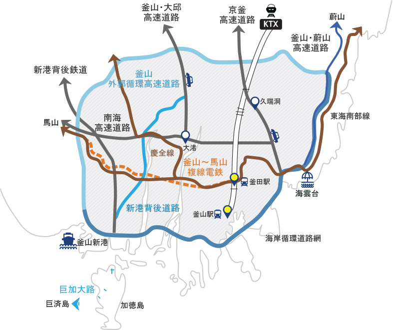

ビジネスしやすい都市
- Home
- 投資メリット
- ビジネスしやすい都市
東南経済圏の中心地
釜山は東南経済圏の物流・経済の中心地です。韓国の産業ハブとして763万人の定住人口を有している東南経済圏は、船舶建造の90%、造船部品生産の90%、自動車生産の45%、製造業生産の40%を占めています。

最適な交通インフラ
国内と海外に通じる陸上・航空・海上交通システムが整っている釜山は、海と陸をつなぐ最適な交通インフラを提供し、企業の交通の便向上、物流コスト削減などの面でメリットがあります。



優れた人的資源
釜山は360万人の人口と競争力ある教育インフラをもとに、優れた人的資源を有しています。25大学と334研究機関をはじめ、フラウンホーファー(Fraunhofer)応用技術研究所、INIグラフィックスネット (INI-GraphicsNet)、ロールス・ロイス(Rolls-Royce)大学技術センター、ロイドレジスター財団リサーチ・センター・オブ・エクセレンス(Loyd's Register Foundation Research Center of Excellence)、アジア太平洋経済協力(APEC)気候センターなど、世界有数のR&Dセンターが釜山に常駐しています。

※ 2012年ベース